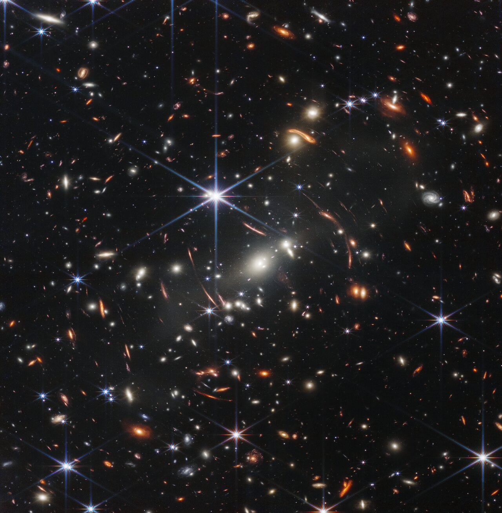
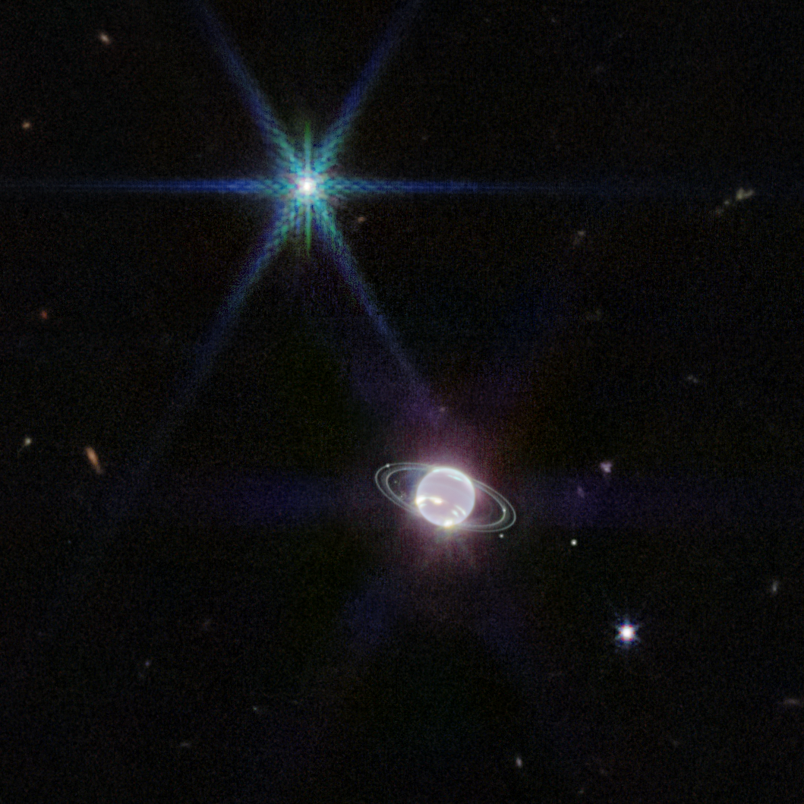
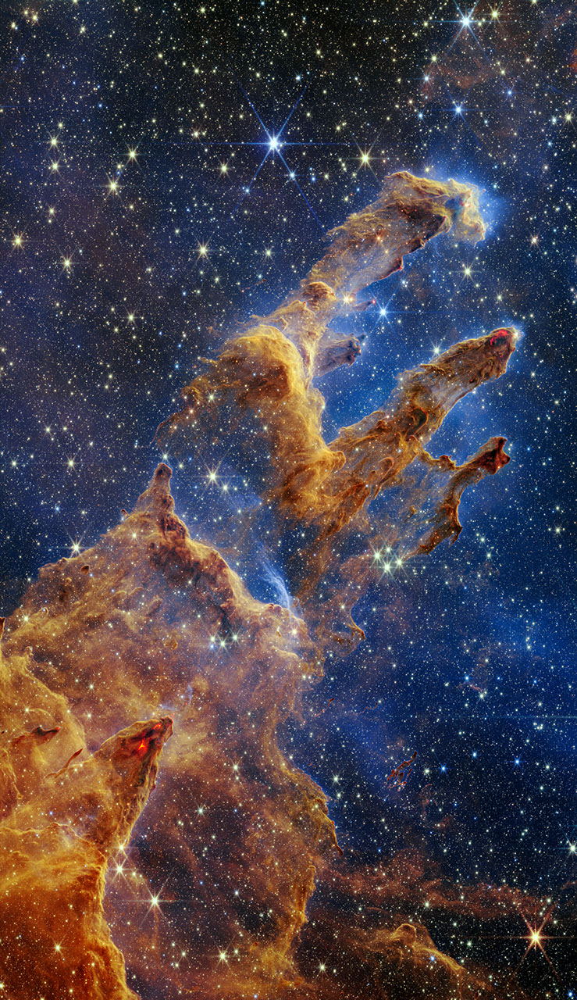
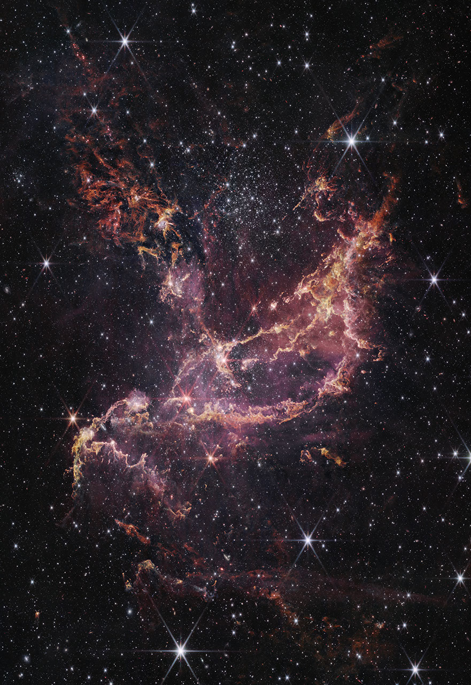

Webb’s First Deep Field (NIRCam Image)
NASA’s James Webb Space Telescope has produced the deepest and sharpest infrared image of the distant universe to date. Known as Webb’s First Deep Field, this image of galaxy cluster SMACS 0723 is overflowing with detail.
Image Credit: Image: NASA, ESA, CSA, STScI
Published: July 11th, 2022

Southern Ring Nebula (NIRCam Image)
The bright star at the center of NGC 3132, while prominent when viewed by NASA’s Webb Telescope in near-infrared light, plays a supporting role in sculpting the surrounding nebula.
Image Credit: NASA, ESA, CSA, STScI
Published: July 12th, 2022

Stephan’s Quintet (NIRCam and MIRI Composite Image)
An enormous mosaic of Stephan’s Quintet is the largest image to date from NASA’s James Webb Space Telescope, covering about one-fifth of the Moon’s diameter.
Image Credit: NASA, ESA, CSA, STScI
Published: July 12th, 2022

“Cosmic Cliffs” in the Carina Nebula (NIRCam Image)
What looks much like craggy mountains on a moonlit evening is actually the edge of a nearby, young, star-forming region NGC 3324 in the Carina Nebula.
Image Credit: NASA, ESA, CSA, STScI
Published: July 12th, 2022

Cartwheel Galaxy (NIRCam and MIRI Composite Image)
This image of the Cartwheel and its companion galaxies is a composite from Webb’s Near-Infrared Camera (NIRCam) and Mid-Infrared Instrument (MIRI), which reveals details that are difficult to see in the individual images alone.
Image Credit: NASA, ESA, CSA, STScI, Webb ERO Production Team
Published: August 2nd, 2022

Tarantula Nebula (NIRCam Image)
In this mosaic image stretching 340 light-years across, Webb’s Near-Infrared Camera (NIRCam) displays the Tarantula Nebula star-forming region in a new light, including tens of thousands of never-before-seen young stars that were previously shrouded in cosmic dust.
Image Credit: NASA, ESA, CSA, STScI, Webb ERO Production Team
Published: September 6th, 2022

Neptune (NIRCam)
This image of the Neptune system, captured by Webb’s Near-Infrared Camera (NIRCam), reveals stunning views of the planet’s rings, which have not been seen with this clarity in more than three decades.
Image Credit: NASA, ESA, CSA, STScI; Image Processing: Joseph DePasquale (STScI), Naomi Rowe-Gurney (NASA-GSFC)
Published: September 21st, 2022
Webb View of Dimorphos Ejecta (NIRCam)
This image from NASA’s James Webb Space Telescope’s Near-Infrared Camera (NIRCam) instrument shows Dimorphos, the asteroid moonlet in the double-asteroid system of Didymos, about 4 hours after NASA’s Double Asteroid Redirection Test (DART) made impact.
Image Credit: NASA, ESA, CSA, Cristina Thomas (Northern Arizona University), Ian Wong (NASA-GSFC); Image Processing: Joseph DePasquale (STScI)
Published: September 29th, 2022

Pillars of Creation (NIRCam Image)
The Pillars of Creation are set off in a kaleidoscope of color in NASA’s James Webb Space Telescope’s near-infrared-light view.
Image Credit: NASA, ESA, CSA, STScI; Image Processing: Joseph DePasquale (STScI), Anton Koekemoer (STScI), Alyssa Pagan (STScI)
Published: October 19th, 2022

Dwarf Galaxy WLM (NIRCam Image)
A portion of the dwarf galaxy Wolf–Lundmark–Melotte (WLM) captured by the James Webb Space Telescope’s Near-Infrared Camera.
Image Credit: NASA, ESA, CSA, Kristen McQuinn (Rutgers University); Image Processing: Zoltan Levay (STScI)
Published: November 9th, 2022

L1527 and Protostar (NIRCam Image)
The protostar within the dark cloud L1527, shown in this image from NASA’s James Webb Space Telescope Near-Infrared Camera (NIRCam), is embedded within a cloud of material feeding its growth.
Image Credit: NASA, ESA, CSA, STScI; Image Processing: Joseph DePasquale (STScI), Alyssa Pagan (STScI), Anton Koekemoer (STScI)
Published: November 16th, 2022

NGC 346 (NIRCam Image)
NGC 346, shown here in this image from NASA’s James Webb Space Telescope Near-Infrared Camera (NIRCam), is a dynamic star cluster that lies within a nebula 200,000 light years away.
Image Credit: NASA, ESA, CSA, Olivia Jones (UK ATC), Guido De Marchi (ESTEC), Margaret Meixner (USRA); Image Processing: Alyssa Pagan (STScI), Nolan Habel (USRA), Laura Lenkić (USRA), Laurie Chu (NASA Ames)
Published: January 11th, 2023